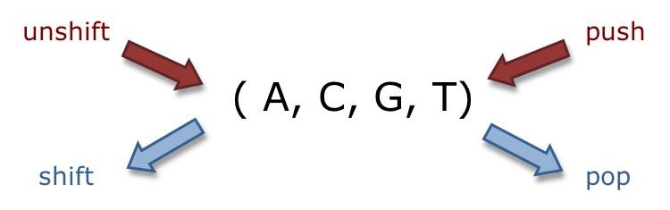

Prework Study Guide
✨ Open the Console to See What's Happening ✨
Random
ctrl+/ = toggle highlited line to be a note or not
HTML
- The head element contains information about the webpage.
- The body element represents the visible content shown to the user.
-
Start with
<!DOCTYPE html>
<html lang="en">
CSS
- Used to stylize the web app
- A margin indicates how much space we want around the outside of an element.
- A padding indicates how much space we want around the content inside an element.
- h1,h2,h3... are headers. The lower the number, the larger the size. (Ex/ h1=Main header(Prework Study Guide), h2=2nd header (HTML,CSS,Git,JavaScript)
22-Sep-22
- .xxx is to identify classes. #xxx is to identify id's. id is more specific than class
- want to link stylesheet in the head. they need to be before any of the content shows up
- call multiple classes by putting class="class1 class2" --- you CANNOT call multiple id's
- naming your classes and id's is important for organization
use your context clues (look at other html/css files to see what to do
- how to link to stylesheet: link rel="stylesheet" href="./assets/style.css"
- the later man wins. if you have a later selector it will override ones before it, unless it's more specific (an id can keep it's power if the override to follow is just a class)
- CSS Specificity:
- default font size is 16px
26-Sep-22
- * is the universal selector
- start by setting default things (universal selector, all headers, individual headers, paragraphs, etc... just do before classes and id's)
- use rem for sizing things like font and margin, this is relative to the universal size. (ex. uni font is 16px. 2rem=32px)
- "margin: 0 auto;" centers block level elements
- content-box = set width + padding in addition. border-box = set width, will not extend beyong set width... box-sizing: border-box; is typical to be in the universal section
- style widest screen first (ex. normal, tablets, big phones, little phones)
27-Sep-22
- FLEXBOX - Guide
- TRANSFORM - Guide
- box-shadow, border-radius, border-top-right-radius
- sometimes need to use CSS reset - find a premade reset.css sheet. tag it before the actual style sheet
29-Sep-22
- Selectors
- pseudo elements allow you to style specific parts of elements. (::before and ::after are the most common) (:hover is a pseudo class, ::after is a pseudo element)
- changing position changes if something is in the flow or not. Absolute=I wanna position myself with my nearest positioned parent as my reference point, Relative=change my position. in order to contain something wihtin something, parent needs to be relative, child would be absolute
- This is called a data attribute: data- prefix (used like a class or id) (ex. data-descr="wait for it" data-john="here's the kicker" data-donut"lol"
- the data- tag is like a custom selector creator
- Wireframing - "well I gotta create a webpage but I don't know where to start, by I need to do something" It's about form. No actual content
- create custom variables using "--xxx blue", this way if you need to change the theme of a whole page you just have to change the color in one spot. call it with var(--xxx). Can use with anything... colors, links, images.
Git
- git status: checks what branch we are currently on
- git checkout -b branch-name: creates a new branch and switches to it
to commit docs to GitHub: 1) git add -A 2) git commit -m "Updated project ..." 3) git pull origin main 4) git push origin feature/project-README
- cd \ or cd ../ to go back within file explorer
31-Oct-2022
- talkin' bout group project- add .DS_Store to .gitignore (continue to use node ignore file)
- submit an issue and assign to self, can add labels as needed
- just putting 'git commit' will open VS and you can put multiple lines of comments rather than just 1 line with -m
- git checkout to pull branches from github
- git commit --amend adds to previous commit (still need to git add -A or git add assets/images...)
JavaScript
- A variable is a named container that allows us to store data in our code.
- Control flow is the order in which a computer executes code in a script.
- JS lives within <script></script>
- Hint: name variables so the data type is obvious (ex. var isLunchTime = true... "isLunchTime" implies the output would be yes or no)
06-Oct-22
- Scope isthe "visibility" of something (ex. everyone in seattle can see the sun set at 7pm, not everyone in seattle can see the space needle at that same time.)
- "you should avoid putting variables in global space" Fine to use with a small program
- EXPRESSIONS OUTPUT A VALUE: a+b, 3+5, 12 === "12", these are expressions. But they don't go anywhere, so you have to put it in a function or if or console.log. Or assign it to a variable
- Removing things from arrays: yourVariable.unshift(), etc.
- constants are often all caps (ex. Rock paper scissors game: var OPTIONS = ["R", "P". "S"])
- this.name is like saying my.name. you can pull something from within the object it's inside
- this refers to the parent object
- this, when put outside of an object refers to the window as a whole. The window is exactly what you think, it's the window that contains objects, which is everything in the code.
Web APIs
- Application Programming Interface
- DOM = Document Object Model, it's like a flow chart/tree of the opened webpage. Everytime you refresh the page it rebuilds the DOM, top to bottom
20-Oct-22
- Bootstrap - We use v4.6 in this course.
- Bootstrap is very helpful, it is a helper tool. Lots of good documentation on how it works. Just search for what you need and copy the code. DON'T FORGET TO CREDIT THEM.